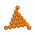
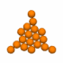
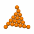
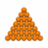

|
|
Usage: geodesic [options] [input_file]
Read a file in OFF format and make a higher frequency, plane-faced
polyhedron or geodesic sphere. If input_file is not given the program
reads from standard input
Options
-h,--help this help message (run 'off_util -H help' for general help)
--version version information
-f <freq> pattern frequency, a positive integer (default: 1) giving the
number of repeats of the specified pattern along an edge
-F <freq> final step frequency, minimum number of edges to move between
base vertices in the geodesic model. For a pattern m,n the
step frequency is pattern_frequency/(m+n)
-c <clss> face division pattern, 1 (Class I, default), 2 (Class II), or
two numbers separated by a comma to determine the pattern
(Class III, but n,0 or 0,n is Class I, and n,n is Class II)
-M <mthd> Method of applying the frequency pattern:
s - geodesic sphere (default). The pattern grid is formed
from divisions along each edge that make an equal angle
at the centre. The geodesic vertices are centred at the
origin and projected on to a unit sphere.
p - planar. The pattern grid is formed from equal length
divisions along each edge, the new vertices lie on the
surface of the original polyhedron.
-C <cent> centre of points, in form \"x_val,y_val,z_val\" (default: 0,0,0)
used for geodesic spheres
-o <file> write output to file (default: write to standard output)
A Class II icosahedral geodesic sphere with a pattern frequency of 4
geodesic -c 2 -f 4 ico | antiview
geodesic -c 2 -F 4 ico | antiview
geodesic -M p -c 1,2 -f 3 oct | antiview
Geodesic faces may bridge across an edge of the base polyhedron. If the edge belongs to only one face, or is shared by faces with opposite orientations, the geodesic faces that bridge the edge will not be included in the output.
All the patterns may be specified by a pair of integers. If the integers are a and b, a triangular grid is laid out on the polyhedron face, having (a² + ab + b²)/highest common factor(a, b) divisions. Taking the faces in order it is posible, starting at a face vertex, to step a units in a direction between the edges, then turn left and step another b units and, if the point lies on the face, this point will be a geodesic vertex. The process can be repeated three times from this geodesic vertex, finding the original face vertex and up to two new geodesic vertices. The process is continued until all the geodesic vertices covering the face have been found.
| 0,6 | 1,5 | 2,4 | 3,3 | 4,2 | 5,1 | 6,0 |
 |
 |
 |
 |
 |
||
| F6 Class I | 1x 1,5 Class III | 2x 1,2 Class III | F6 Class II | 2x 2,1 Class III | 1x 5,1 Class III | F6 Class I |
In terms of the general pattern, the Class I pattern is equivalent to 0,1 and the Class II pattern is equivalent to 1,1. Any pattern a,b with a, b > 0 and a ≠ b is a Class III pattern. Class III patterns are chieral, with a,b and b,a being mirror images of each other.
A pattern given by a general integer pair has the property that if the pattern repeat frequency is f then it is possible to move between base vertices by moving fa vertices along one line of edges, then turning and moving fb along another line of edges. This establishes the relationship F = f(a+b) between the -f and -F options.
For some patterns there will be geodesic vertices lying on the polyhedron edges between the face vertices. There will be f x Highest Common Factor(a, b) steps between these geodesic vertices along each polyhedron edge.
Up:
Programs and Documentation
Next:
zono - zonohedra from OFF files